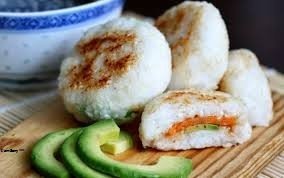

Yoko's Kitchen
Japanese Cooking Classes
Home
About
Contact
Catering
Classes
Japanese Vegetarian
Five Week Course In London
A five week introduction to traditionalS japanese vegetarian japanese meals teaching you a selection of rice and noodles dishes

Sauces MasterClass
One Day WorkShop
An IntenSive One-Day Course Looking At How To Create The Most DeliciouS SauceS For Use In A Range Of Japanese COokery
Popular Recipes
Yakitori (grilled Chicken)
Tsukume (minced chicken Patties)
Okonomiyaki (savory PanCakes)
MizuTaki (Chicken Stew)
COntact
YoKo's Kitchen
27 Redchurch Street
Shoreditch
LonDon E2 7DP